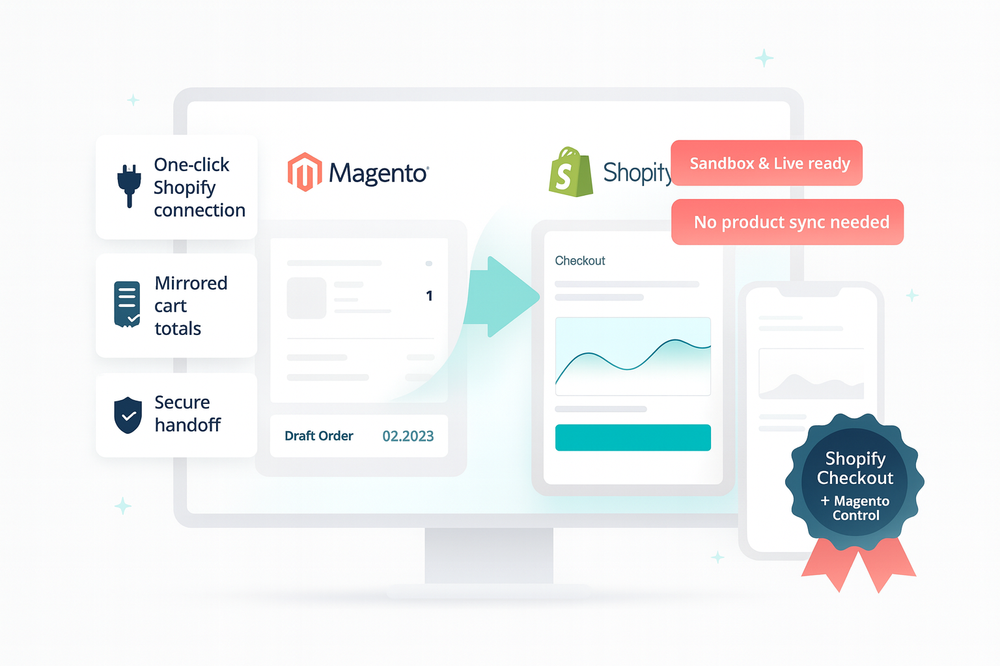
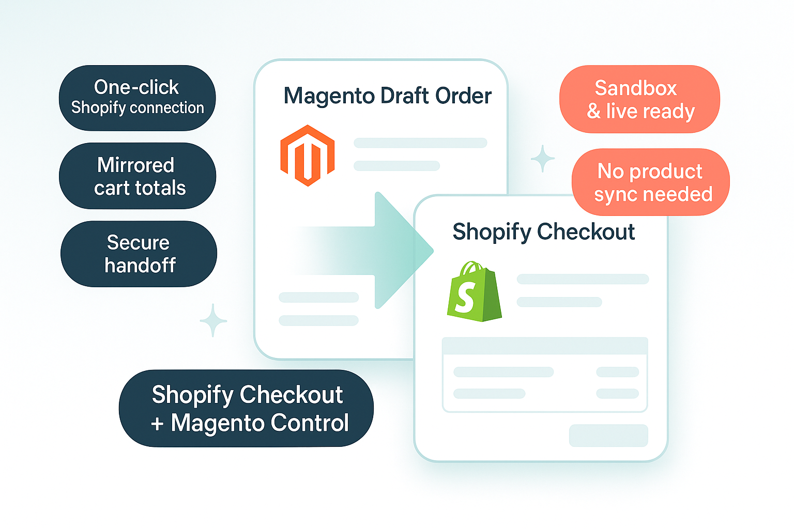
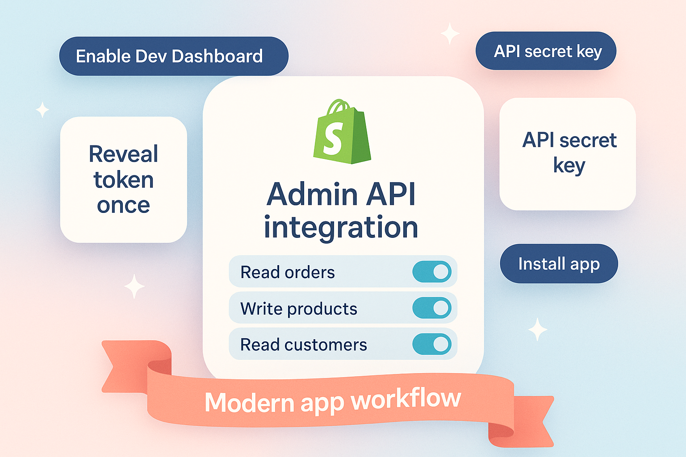
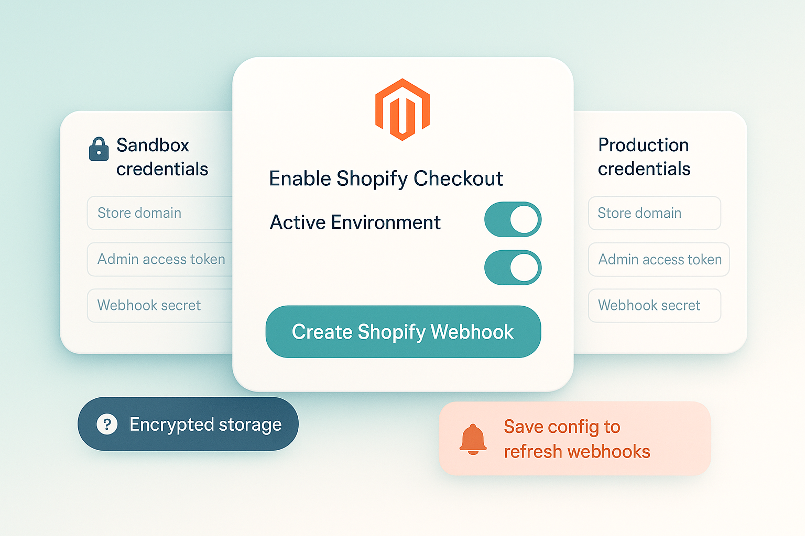
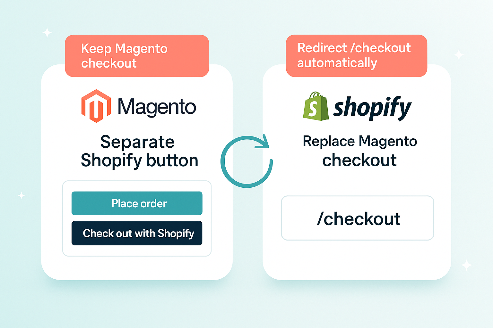
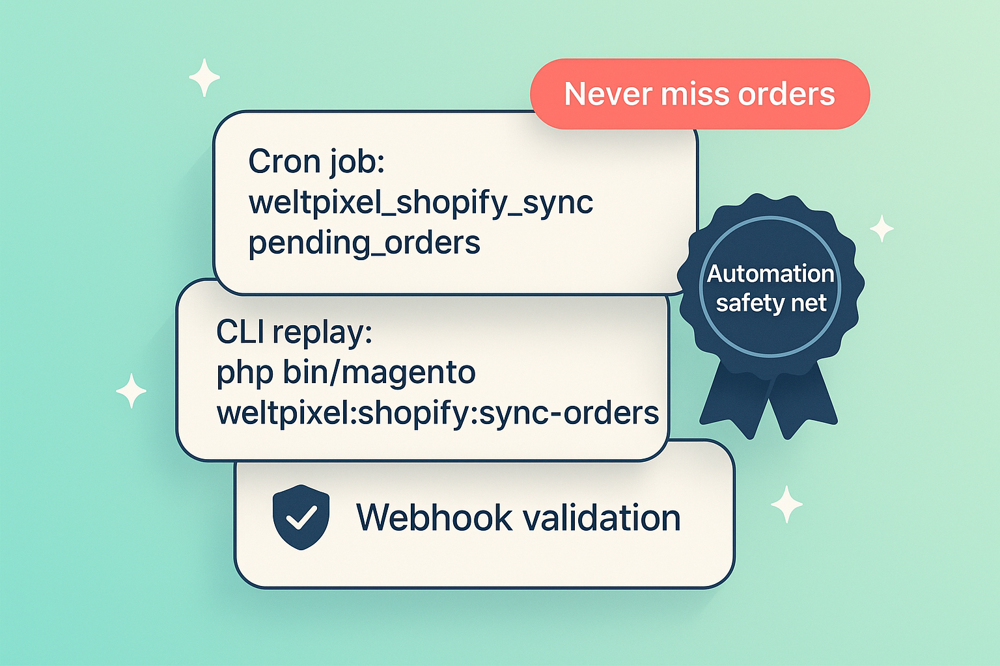

Delegate secure payments to Shopify while Magento keeps full control of catalog, cart, and order lifecycle—now FREE for WeltPixel merchants.
WeltPixel Shopify Checkout pairs Shopify’s high-converting payment experience with the merchandising power of Adobe Commerce.
Customers finish their purchase in Shopify’s familiar flow, while your Magento store keeps ownership of products, promotions, and post‑order communications. The handoff feels effortless for shoppers, reliable for your team, and it’s offered FREE by WeltPixel. You’ll just need a Shopify store on the Shopify Grow plan (or higher) with checkout access to link the two platforms.
Watch a guided tour that demonstrates the shopper handoff to Shopify Checkout, how orders sync back into Magento, and the admin tools that keep everything aligned.
Show a “Checkout with Shopify” button right beside Magento’s native options on cart and checkout pages. Prefer a full handoff? Replace Magento’s “Proceed to Checkout” buttons so every click redirects straight to Shopify for a smoother customer journey.
Keep testing and production separate with a simple environment toggle and dedicated credential slots.
Securely shares only the details Shopify needs, using encrypted configuration and built-in safeguards.
Completed checkouts glide back into Magento, so fulfillment, invoicing, and reporting stay exactly where you expect them.
Every touchpoint keeps shoppers confident and your team in control.
The FREE Shopify button displays only when Magento clears the cart, so the option feels intentional.
Quotes convert to Shopify draft orders with matching items, discounts, and customer data.
Shoppers complete payment on Shopify’s secure page while your Magento store awaits the order confirmation.
Shopify webhooks—or the FREE cron fallback—notify Magento to create the order and capture payment metadata.
Magento Admin messaging highlights issues, and automated follow-ups re-check pending sessions.
Your invoicing, fulfillment, and loyalty programs continue untouched—Shopify purely handles checkout.
Gain Shopify’s frictionless checkout while Magento remains the single source of truth for your business.
Highlights from the FREE WeltPixel Shopify Checkout module.
Generate Shopify draft orders on demand using the current Magento quote so customers see familiar products, discounts, and totals when they land on Shopify’s checkout.

Follow Shopify’s latest Dev Dashboard workflow to provision tokens and secrets with the right Admin API scopes—no legacy private apps required.

Use the WeltPixel configuration section to toggle the integration, paste credentials, and create or delete Shopify webhooks without leaving Magento.
orders/paid and orders/fulfilled automatically.
Keep the standard Magento checkout and add a Shopify button for visibility, or replace Magento’s checkout links entirely when you’re ready to redirect every shopper.
/checkout and “Proceed to Checkout” buttons automatically.
Background jobs and CLI tooling replay Shopify orders, while Magento stores every checkout session in its own table for visibility and auditing.
weltpixel_shopify_sync_pending_orders replays outstanding sessions.php bin/magento weltpixel:shopify:sync-orders imports individual orders on demand.
Quick tip: Let customers know they’ll complete payment on Shopify’s secure checkout—and that you can offer it FREE thanks to this integration.
Double-check hosting prerequisites:
app/codeThe Shopify Checkout extension is Open Source and its files can be found on GitHub:
Clone the repository or download the ZIP archive and copy the files into app/code/WeltPixel/ShopifyCheckout alongside the shared app/code/WeltPixel/Backend module. The Backend module provides the licensing UI and admin elements required by several WeltPixel extensions.
This integration is offered FREE and Open Source so you can leverage Shopify Checkout without subscription costs.
From your Magento root, run:
php bin/magento module:enable WeltPixel_Backend WeltPixel_ShopifyCheckout
php bin/magento setup:upgrade
If your site runs in production mode, finish with:
php bin/magento setup:di:compile
php bin/magento setup:static-content:deploy -f
php bin/magento cache:flush
Visit Stores → Configuration → WeltPixel → Shopify Checkout, set the environment to Sandbox, add Shopify credentials, and confirm the FREE “Checkout with Shopify” button appears on your storefront.
Place a sandbox order to confirm the FREE Shopify Checkout experience works end to end before going live.
Follow Shopify’s Dev Dashboard flow (the replacement for legacy “Develop apps” pages) to capture the Admin API access token and webhook secret required by the integration.
Log in to your Shopify admin with a staff account that can manage apps. Navigate to Settings → Apps and sales channels and choose Develop apps. Shopify now opens the Dev Dashboard; if prompted, approve custom app development for the store. This replaces the older “private app” workflow.
Click Create app. Give the app a recognizable name (for example, Magento Shopify Checkout) and choose the app owner. Confirm with Create app to land on the new app workspace that features tabs for Overview, App setup, and Configuration.
Inside the app workspace, open Configuration → Admin API integration and click Configure. From the Dev Dashboard scope picker, enable the permissions the module relies on:
write_products — create, update, or archive the dynamic products and upload images.read_products — read the product and image resources created during syncing.write_draft_orders — create the draft order that powers the checkout handoff.read_draft_orders — reload draft orders when reconciling or retrying cron jobs.read_orders — fetch the final Shopify order when webhooks fail or during audits.Save your changes when finished.
Return to Overview (or use the banner in Configuration) and select Install app. Approve the Dev Dashboard install prompt so the app gains access to your store data.
From Configuration → Admin API integration, expand the Access tokens panel and click Reveal token once. Copy the Admin API access token into a secure password manager immediately—Shopify only shows it this one time. Paste it into Magento’s Admin Access Token field when you configure the module.
In the same view, expand App credentials and copy the API secret key. Magento uses this value as the “Webhook Shared Secret” to validate Shopify’s X-Shopify-Hmac-Sha256 header.
Keep both values safe; Shopify only shows the access token once.
You do not need to create webhooks manually in the Dev Dashboard. After you paste the credentials into Magento, click the Create Shopify Webhook button in the module configuration. Magento registers the orders/paid and orders/fulfilled endpoints against your Dev Dashboard app automatically.
Need to rotate credentials later? Open the Dev Dashboard again, select your app, issue a new Admin API access token from Configuration → Admin API integration, and update Magento’s settings before clicking the webhook button.
A short tour of the key settings so you can tailor the experience to your store.
Magento Admin → Stores → Configuration → WeltPixel → Shopify Checkout
Switch on the module when you’re ready for customers to see the new option in cart and checkout.
Enter the Shopify Store Domain (for example, mystore.myshopify.com), Admin Access Token, and Webhook Shared Secret in the Sandbox credentials group first so you can test with confidence.
This toggle defaults to Yes so Shopify checkout can include the Magento product image. Shopify needs an associated product record, so the module automatically creates the item (and reuses it later) to supply images and other product details.
Set it to No if you want to skip product creation in Shopify; the checkout will still load, but product images from Magento won’t appear.
Heads-up: the first time Shopify has to create products, checkout can take a moment longer—especially for carts with several new items. Once those products exist, repeat orders load much faster because Shopify instantly reuses them.
The shared secret powers Shopify’s X-Shopify-Hmac-Sha256 signature and is required for Magento to trust incoming orders/paid and orders/fulfilled events.
Click Save Config to store the credentials securely. Magento encrypts everything for you.
Tip: Keep your Shopify admin open while configuring so you can quickly copy any updated keys.
Sandbox mode is perfect for rehearsal. Gather live credentials only when your team is ready for launch.
Use the dropdown to tell Magento which credential set to use. Leave it on Sandbox until every handoff test feels great.
After saving, click the “Create Shopify Webhook” button under the Sandbox or Production credential set. Magento registers orders/paid and orders/fulfilled callbacks that point to /shopifycheckout/webhook/order.
Use the matching “Delete Shopify Webhook” button before swapping credentials so you know only the active environment is allowed to reach Magento.
Success and error messages appear in the admin interface so you know everything is linked correctly.
Rotate your Shopify keys with confidence—re-run the webhook button anytime you make a change.
Set Proceed to Checkout Behavior to either keep Magento’s native checkout and add a separate Shopify button, or replace every “Proceed to Checkout” link with the Shopify redirect. Replacement mode also reroutes direct visits to /checkout so shoppers never miss the handoff.
If you keep the separate Shopify button, add a short note on your cart or checkout page so shoppers know payment finishes on Shopify.
Confirm the button spacing and messaging look great on the screens your shoppers use most.
Consistent messaging reassures shoppers that the Shopify step is intentional and secure.
Ready to handoff
The FREE Shopify button only displays when Magento clears the cart, so the option feels intentional.
Behind-the-scenes sync
Quotes convert to Shopify draft orders with matching items, discounts, and customer data.
Checkout moment
Shoppers complete payment on Shopify’s secure page, and Magento records the order as soon as Shopify confirms it.
Automatic confirmation
Shopify webhooks—or the cron fallback—notify Magento to create the order and capture payment metadata.
Built-in reassurance
Magento Admin messaging highlights issues, and automated follow-ups re-check pending sessions.
Magento keeps the lead
Your invoicing, fulfillment, and loyalty programs continue untouched—Shopify purely handles checkout.
Make sure the module is enabled, the environment is set to Sandbox or Production, and the cart has no validation issues. If you selected the “replace checkout buttons” behavior, the standalone Shopify button hides on purpose—Magento’s default checkout link now redirects to Shopify instead.
Double-check that the Shopify store domain matches the format yourstore.myshopify.com, the admin token is still active, and the webhook secret was copied correctly. After saving, click “Create Shopify Webhook” for the active environment to refresh the connection; Magento logs any API errors under var/log with a “Shopify” prefix if retries are needed.
Confirm that orders/paid and orders/fulfilled webhooks exist for the active environment and point to your Magento URL. If they look correct, run php bin/magento cron:run or the replay command php bin/magento weltpixel:shopify:sync-orders --order-id=<SHOPIFY_ORDER_ID> to import the sale from Shopify. You can also review the matching quote entry in weltpixel_shopifycheckout_quote for status clues.
Shopify displays tax and shipping in its own layout. Let customers know they’re seeing the same final amount they approved in Magento and add clarification messaging if needed.
Refunds are currently handled separately in Shopify and Magento. Process the refund in both systems so inventory and financial records stay aligned.